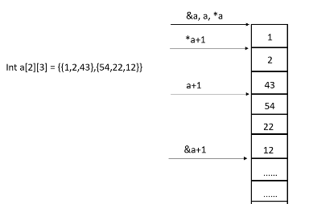

6.2-6.7
1. 全局对象的生命周期跨越整个程序运行时间，优先于main函数进行初始化，在main函数返回时撤销.即析构
2.&a+i = a + i*sizeof(a);
a+i = a +i*sizeof(a[0]);

3. 数组初始化两种方式：一种逐个赋值 char a[14] ={‘H’，‘e’,'l','l','o'}；另一种 char a[14] = "Hello, world!"
char s[10]="right!";（字符数组）
char *sp="right!";（字符指针）
4. 内部静态类的可见性是定义它的函数范围内（即‘{}’内），而其存在性是直到程序运行结束
5. 改变变量的值，要用指针。
改变指针的值，要用指针的指针。
6. 模板（Template）是一种强大的C++软件复用特性，通常有两种形式：函数模板和类模板。函数模板针对仅参数类型不同的函数（答案C ok）；类模板针对仅数据成员和成员函数类型不同的类(答案D ok)。函数模板和类模板可以是程序员只需制定一个单独的代码段，就可表示一整套称为函数模板特化的相关（重载）函数或是表示一整套称为类模板特化的相关的类。这种技术称为泛型程序设计（generic programming）。
7. x&(x-1)统计1的个数，x|(x+1)统计0的个数
8. "%.5s"的意思是字符串最多输出5个字符。
"%5s"的意思是，输出至少5个字符，如果不够五个字符，左侧用空格补齐。
9. 函数的隐含储存类型是extern,函数的形参或变量的储存类型为auto
10. enum中：首元素不赋值的话，默认为0；后一个元素不赋值的话比前一个元素大1
11. 一个算法应该具有以下5个特性：有穷性、确定性、可行性、有零个或多个输入、有一个或多个输出
13.

14.二维数组赋初值方法（c程序设计第三版138页）
（4）如果对全部元素都赋初值，则定义数组时第一维可以忽略，但是第二维必须存在
同时：在定义的时候也可以对部分元素赋初值而忽略第一维的长度，但应该分行赋初值。
可见：可以忽略第一维的长度，但是是有条件的：要么你把全部元素都写出来，或者你分行写出元素（可以不全），但是不可以不赋值
15. 当基类构造函数需要外部传递参数才能进行初始化时，派生类必须显式定义构造函数，为基类传递参数；基类如果不需要传递或者可以不传递参数，派生类可以不用显式定义构造函数。
16.在64位系统下
重点理解p跟谁结合了，跟[]结合，则p就是一个数组;跟*结合，p就是一个指针；
首先[]()的优先级一样，均大于*
char *p[10]，p与[]结合，所以p就是一个数组，数组的元素比较特殊，是指针，指针大小为8，所以是10*8=80；
char(*p1)[10]，与*结合，所以是一个指针，大小为8